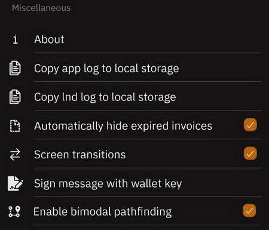
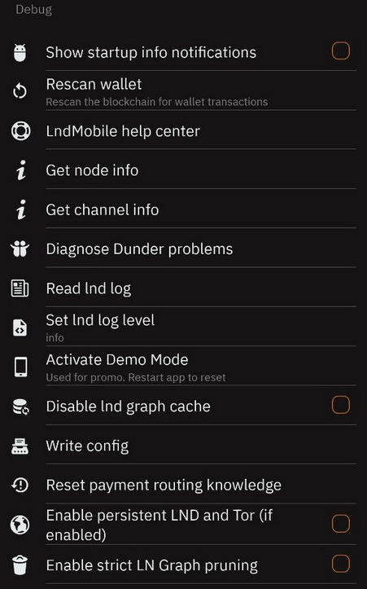

Table of Contents
Blixt Wallet contains three main sections, each one with specific options, features and utilities. The main screen displays the Lightning wallet directly. LN is the main use of this wallet and it will focus that. Also the main action buttons, send and receive, are at the bottom of the screen.
The balance displayed on the main screen represents ONLY the Lightning wallet balance. The on-chain wallet balance is displayed in another section of the app (top drawer menu). You can read the reason why here.
Blixt Wallet Main Features
Neutrino Node
Blixt Wallet connects by default to the Blixt Wallet node to sync the Bitcoin blocks and indexes with Neutrino (BIP 157), but users can also connect to their own Bitcoin node.
It is syncs the entire Bitcoin blockchain (headers and filters) in less than 5 minutes, respecting user privacy. Blixt Wallet does not use any centralized servers for doing transactions, all transactions are broadcast directly from your Blixt Wallet app, into the Bitcoin mempool.
Please note: At this point Blixt Wallet will require some space for this sync on your device, around 1GB of data for block sync and the LN graph (network map).
Full non-custodial LND node
Users can manage their own Lightning channels with an easy interface and enough information shown to have a good and smooth experience.
In the top left drawer menu you can go to Lightning channels and start opening channels with other nodes as you wish. By default, when you first send on-chain funds to a new Blixt Wallet, it will automatically open a channel with those funds to the Blixt Wallet LSP node. You can disable this in settings if you wish.
These LN channels, by default will be un-announced channels (also called private channels). This means that they will not be "visible" by other nodes in the network, only the channel partner will know about it and will route your transactions accordingly through their own channels. Also private channels DO NOT route payments for others.
So practically Blixt is a PRIVATE NODE, to offer you full control of your payment routes in a private way, with the routing costs decided by you based on the peers you connect to. So choose your peers wisely when opening channels.
It's also worth mentioning that you should have at least 2-3 LN channels open in your Blixt Wallet for better availability of routes and also to take advantage of MPP (Multi-Path Payments), a feature that is also available in Blixt Wallet.
You can check in the FAQ page for some recommendations on how and with who to open channels.
Bitcoin On-Chain Wallet
This feature is quite hidden, because it's not the main focus of this app. But it's easy to access it from the top left drawer menu.
Since on-chain transactions aren't used often by LN power users, it's not visible on the main screen. But that's OK, you can use it like a separate wallet where you can manage addresses and see your transaction log. In the future, more functionalities for this on-chain wallet like coin control, RBF (Replace by Fee), etc. could be included.
Right now, the main purpose of this on-chain wallet is to manage the opening and closing of LN channels and not for regular day to day payments using on-chain transactions.
See a more detailed explanation about using the Blixt on-chain wallet in the Guides page.
Bitcoin Lightning Wallet
This is located on the main screen, as it's the main usage of the app. The balance displayed is only for the LN wallet and does NOT contain the on-chain wallet balance.
It has a simple and easy to use interface and offers all the necessary options to receive and send sats over Lightning Network.
Users can easily switch the units displayed for the balance by simply tapping on the balance. Also it displays the balance in the local fiat currency sourced from CoinGecko and Blockchain.com.
Blixt Wallet Options (settings menu)
This section will describe each option in the "Settings" menu for a better understanding.
There are specific sections in this menu: General | Wallet | Security | Display | Bitcoin Network | Lightning Network | Miscellaneous | Experiments | Debug
General section

Name
This option allows the user to send a specific name in a payment, but only if it's desired and necessary, is completely optional. It can be any name and is stored only on the device.
IT IS NOT the LN node alias! Blixt Wallet does not use a node alias, it's a private LN node.
Language
The default language is English. Other available languages are: Spanish, German, French, Swedish, Klingon. More languages will be available soon.
Push Notifications
This is a simple function that notifies the user with messages about transactions and channel events when the app is running in background.
Check clipboard for invoices
When this option is activated, Blixt Wallet will automatically check the device's clipboard for invoices when the app is opened and will bring up the payment screen for an easy and simple user experience when making payments.
Save geolocation of transaction
A very useful tool to privately add a note to a transaction with the location where it occurred. Sometimes you can't remember where you were paying and you want to keep track of where you spend money.
This option is totally optional, so if you are worried about your privacy and/or your device could be stolen and you didn't secure it well, you can keep this option disabled. Anyways, the data is ONLY stored locally on the device.
Wallet section

Show mnemonic
This option allows you to make a backup of your 24 words wallet seed. It can be accessed at any time, multiple times. Save those words in a safe place! This is serious, save the seed immediately after you create a new wallet!
Remove mnemonic from device
This option is an extra security measure. After you've made the backup of your seed, you can totally remove it from your device.
Remember: do not use this option if you have not made a backup first!
It can be used in case where you are afraid that your device could be stolen, seized or accessed accidentally by somebody else. Removing the seed from your device doesn't mean it is removing the wallet and LN node, just the seed words. Wallet will work just as usual.
Export channel backup

This is a VERY IMPORTANT feature for your Blixt Wallet. Do not ignore it! It would be used in case of SHTF and you need to recover your funds that remain in LN channels.
When this option is clicked, it will ask you to select a location on your device to save a copy of your Blixt LN static channel backup (SCB).
After it's saved, it is strongly recommended to make a copy of that file (even move it away from the device) into a safer location.
You should keep a copy of this file together with your Blixt seed words, locked in a password manager.
Export this backup EVERY time you open or close a channel. NOT every time you do a transaction. So you don't need to do it very often and it takes just few seconds to save it and move it away from your device.
You also have the option to save Blixt static channel backup into Google Drive, iCloud and/or local storage in your mobile device (later move that file into a safe location, off of your device).
The restore procedure is quite simple: insert your 24 word seed, add the backup file (previously saved into device storage) and click restore. It will take some time to sync and scan all the blocks for your transactions in the past. Your channels will be automatically closed and funds within them returned to your on-chain wallet (see the drawer menu on the top left - On-chain).
Read more about how to restore a LND wallet into Blixt in the Blixt FAQ page.
Security section
Login with PIN code
This a security feature to add a PIN number when the app is opened and protect it from unauthorized access to your device. You will be prompted 2 times to set a personal PIN.
Keep in mind to save it (maybe together with your seed) in a safe place and don't forget it. Blixt Wallet will be impossible to open after that without the PIN. The only way to restore it will be through a full Blixt Wallet restore (seed + channels.backup) by re-installing app. That will involve closing channels, channel closing fees, time and possible stress.
Login with fingerprint
This security feature will prompt you to use your fingerprint in order to open Blixt Wallet and protect it from unauthorized access. Face ID is also available for iOS devices.
Scheduled chain sync
This option is activated by default and it's best to keep it like that. It will run the Neutrino sync of blocks every 4 hours in the background.
If this option is disabled, neutrino sync is only possible when the app is running in the foreground. This can make the blockchain sync take longer on app start up if Blixt Wallet has not been opened in some time.
Note: This feature is not currently available on iOS.
Display section
Fiat currency
You can set a local fiat currency here. You can switch the primary unit displayed on the main screen between fiat and bitcoin units by tapping on the balance. The fiat exchange rate is sourced from CoinGecko and Blockchain.com.
Bitcoin unit
This option lets you choose your preferred bitcoin unit (BTC, bits, sats, etc.).
On-chain explorer
This lets you choose which blockchain explorer to use when viewing more info about on-chain transactions. The default is the mempool.space explorer. You can choose between: Mempool, Blockstream, Oxt, Blockchair, or custom (your own node for example).
Bitcoin Network section

Bitcoin Node
You can set a specific Bitcoin node to sync blocks from. It can be your own node or any other Bitcoin node that supports BIP 157 (Neutrino sync).
By default, the Bitcoin node is set to "node.blixtwallet.com", but this field can also be left blank and Blixt Wallet will connect with any available node.
The new version of Blixt v0.6.x comes with LND 0.15.x, which also supports Tor v3 onion addresses for Bitcoin nodes. This allows you to use your own personal node that runs behind Tor and doesn't have a clearnet IP/domain set, or any other private node behind a Tor address.
Enable receiving on-chain via Taproot (P2TR)
This option is available thanks to support in LND v0.15 for Taproot addresses. Blixt only supports Taproot addresses from v0.6.x and up.
Taproot (P2TR) is a new address type for Bitcoin on-chain addresses with new functionalities and privacy options. Read more about Taproot here.
Lightning Network section

Show node data
This is an important section where more details about your Blixt Wallet LN node are displayed. This information is very useful and it might be a good idea to save this information for later use if needed. Keep in mind that this information will not be "visible" on public LN explorers, Blixt Wallet uses private/unannounced channels and without any public channels, the node will not be publicly visible. This information can only be used in direct connection with other peers.
The technical information displayed is:
- Node Alias - short ID for your LN node
- Chain - Bitcoin mainnet or testnet
- Best header timestamp - when was the last block synced
- Block Hash - latest block hash number
- Block Height - latest block number that was synced (Bitcoin Time)
- Identity PubKey - the full ID of your node, used to connect with other peers. This is valuable information, keep it at hand.
- Num Channels - displays the total number of channels you have on your Blixt node (active, inactive, pending)
- Num peers - the total number of peers your node currently has a connection to. These peers are not necessarily your channel partners, this includes your channel partners and other LN nodes to share and receive LN gossip.
- Synced to chain - true/false to show if your node is currently synced to the latest Bitcoin block.
- LND version - shows the LND node software version that is used in Blixt.
- Node features - displays the specific technical features activated for your node.
Show Lightning peers
This screen displays each Lightning peer that your Blixt Wallet is connected to, with more technical details for each. You can also manually connect to other peers by clicking the "+" button and scanning or pasting in the URI of the peer you wish to connect to. This option is useful when you want to route a payment through a specific node, send a keysend payment, open a channel with a new peer, or you lost the connection with a peer and you want to re-connect.
Keep in mind that if you want to add peers that are behind Tor, you need to first enable the Tor option in settings and restart the Blixt Wallet app.
Automatically open channels
When this is enabled, if you don't yet have any open channels, Blixt Wallet will use any funds sent to the on-chain wallet to automatically open a channel to the Blixt Wallet LSP node. This will not currently work if you already have an open channel. To open subsequent channels, you will either have to manually open it or receive funds with the Dunder LSP.
This option is enabled by default to provide an easy way for new users to get started. Advanced users can disable this option if they want to manually select which node they would like to open their first channel with.Inbound channel services
This is a feature for merchants or power users that need more INBOUND liquidity. Inbound liquidity means more available space in a LN channel to RECEIVE more sats.
It is easy to use, just select one of the liquidity providers in the list, at the moment the options are Bitrefill Thor and LNBIG. Pay the amount you want for the channel and provide your Blixt Wallet Tor onion node URI and the channel will be opened.
Wait for graph sync before paying
This option is disabled by default and is quite technical. Startup time can increase when this option is enabled, but it can help to find more optimal paths when making payments which can result in lower fees.
Miscellaneous section

About
Displays details about the developer of Blixt Wallet, open-source software used, Github information and licenses.
Copy app log to local storage
This option allows you to export all app logs to a selected folder on your device. Later the log (txt) file can be reviewed or sent to the developer or support team for debugging purposes.
Copy lnd log to local storage
This option is very useful to export for debugging any lnd issues. It will be exported to a selected folder on your device. Later the log (txt) file can be reviewed or sent to the developer or support team for debugging purposes.
Automatically hide expired invoices
This will automatically remove unfulfilled expired invoices from the transactions list on the main screen to reduce clutter.
Sign message with wallet key
This is a very powerful feature that offers a way to cryptographically sign specific messages using your wallet key. This could have various use cases, from validating a Bitcoin address, logging in to a web service, or even opening a hotel door.
Experiments section
This section is named "experiments" because the options displayed are still in development and are not fully tested yet and are subject to change. You should take this into consideration and use these features with caution.
Enable Dunder LSP
An amazing service that allows you to start accepting BTC over the Lightning Network straight away, with no need to first deposit funds on-chain to open a Lightning channel.
For new users this is a quick and easy experience because they can start from zero, receiving funds directly over the Lightning Network.
The size of the channel opened by the Dunder LSP is subject to change depending on demand and available liquidity. This is a free service for now to make it easy to onboard new users and create a seamless experience to directly receive funds over the Lightning Network. The only fee charged is the on-chain fee needed to open the inbound channel.
Read more about Dunder LSP development here.
Read a more detailed guide about using Dunder LSP in the Blixt Guides page.
Enable Multi-Path Payments
A very powerful feature for a LN wallet. When enabled, a larger payment is split into smaller parts that can take multiple paths.
This uses liquidity in channels more efficiently and can help to avoid payments getting stuck due to insufficient liquidity along a single path for a larger payment.
This is disabled by default, but it's a good idea to use it, especially if you want to make or receive larger payments.
Enable Tor
Disabled by default. Enabling or disabling this option will require you to restart Blixt Wallet. When enabled, you can connect to Bitcoin or Lightning nodes privately over the Tor network. Keep in mind some services will still connect over clearnet.
Invoice expiry
This lets you change the expiry time of lightning invoices created by Blixt Wallet. The default time is 3600 seconds (1 hour).
Keep in mind that Blixt Wallet must be open and online to receive payments. Setting this to a longer time doesn't mean you can close the app and still receive the payment.
Debug section

Show startup info notifications
When enabled, notifications will appear at the bottom of the screen after launching Blixt Wallet showing the current status of the start up process. This can be useful for debugging start up issues.
Rescan wallet
This is a useful tool if you seem to be missing any funds in the on-chain wallet.
Once activated, Blixt Wallet must be restarted. The process will begin on the next start up of Blixt Wallet and it will scan all blocks for used Bitcoin addresses, adding any found transactions to the transaction history list in the on-chain wallet. This process can take some time so be patient.
LND Mobile Help Center
This is a very powerful tool that can be used to diagnose, debug and test Blixt Wallet and the underlying lnd node. It can be used when the user is in contact with the developer of Blixt Wallet or support in Telegram to identify possible issues.
Get node info
A simple tool to get more information about a remote node. You must provide a node ID.
Read LND log
A tool to view the lnd log to diagnose any issues it may be having. The log can also be copied to be sent to the developer for further debugging. In general it can be used to check on the startup process to ensure that everything is looking good and that the wallet is syncing properly.
Activate Demo Mode
A nice way to test Blixt Wallet for demonstration purposes without revealing the real wallet info. When activated, Blixt Wallet will be in demo mode until it is restarted.
Disable lnd graph cache
A debugging tool to help with faster startup and to diagnose possible issues. Is used more with assistance from the Blixt Wallet developer.
Blixt Wallet Functions (top left drawer menu)
Channels status icon
This is a little indicator dot in the top right corner of the app drawer. A useful visual indicator to know when Blixt Wallet is active and ready to make and receive payments.
There are three colors this indicator can be:
- Red - Not yet synced to the blockchain, channels are offline.
- Yellow - Chain sync complete. Connecting to channel peers.
- Green - Channels are online, Blixt Wallet is ready to make transactions.
Paste from clipboard
A simple action button that can paste an invoice from the clipboard to be paid. Will bring up the payment screen with invoice details already filled in and you just have to press the "send" button.
Send to Lightning Address
A powerful feature of Blixt Wallet, allowing payments to Lightning Addresses. You can paste or type a lightning address and also save it into a contact list.
Blixt Wallet has implemented full support for the LNURL protocol, Blixt Wallet users can pay, withdraw, authenticate using LNURL.
Eventually you will also be able to receive payments with a Blixt Wallet Lightning Address through a new feature (in development) "Lightning Box".
Contacts and Services
A useful function if you want to have a stable list of destinations where you are going to pay most of the time. This contact list can be LNURL, Lightning Address or future static payment information/invoices. For the time being this list can't be backed up, but there are plans to have an option to export it and also with more options.
Lightning Browser
WebLN - is a library and set of specifications for lightning apps and client providers to facilitate communication between apps and users of lightning nodes in a secure way.
Blixt Wallet offers a series of 3rd party LN services, organized together into a nice simple browser that is easily accessible from the app drawer.
It's also a nice way to promote businesses that accept BTC over LN. This is a feature that will continue to be developed. For the time being, this doesn't work behind Tor so browsing these apps will be over clearnet.
On-chain wallet
Dedicated section to access the on-chain part of Blixt Wallet. This section will display your on-chain balance and a QR code and Bitcoin address to receive on-chain funds to.
On the top right you can press the transactions list button to review all on-chain transactions that have been made, including channel open and close transactions. Tapping a transaction will show more details about it, including the txid, fee paid and more.
This function is mainly intended to be used to deposit and withdraw funds and reviewing opening and closing channel transactions.
Lightning Channels
This option will open a screen that contains all information about the Lightning channels that are open in your Blixt Wallet.
Here you can open and close LN channels, review the status of each one and see the funds available per channel.
Keysend Experiment
To see this option, you must first click on the "Advanced" sub-menu.
This is a very powerful function that few other mobile wallets have. You can send / push funds directly through to a channel peer or to another node, adding a message if desired.
Keysend doesn't require an LN invoice to be generated first, so be aware that once the funds are sent, you do not have any other proof of the transaction, only the secret hash from your own transaction log. For a keysend payment between 2 peers, the payment is totally private.
See more details about how to use the keysend function in the FAQ page.
This feature is very useful for sending paid messages through LN, for example, posting messages on Amboss.space Billboard (here is a guide about how to use the Amboss billboard).
"Easter eggs / Blixt God Action"
Yes, inside the Blixt Wallet app, there are many hidden features. Small things that make the app delightful, activating interesting actions and responses. Hint: try tapping the Blixt logo in the drawer :) I'll let you discover all the rest.
The "Blixt God Action" can be activated with a long press on specific text or options inside the app. Long pressing is like a "GodMode" in Blixt and will do things like copying text, hidden actions or popups.